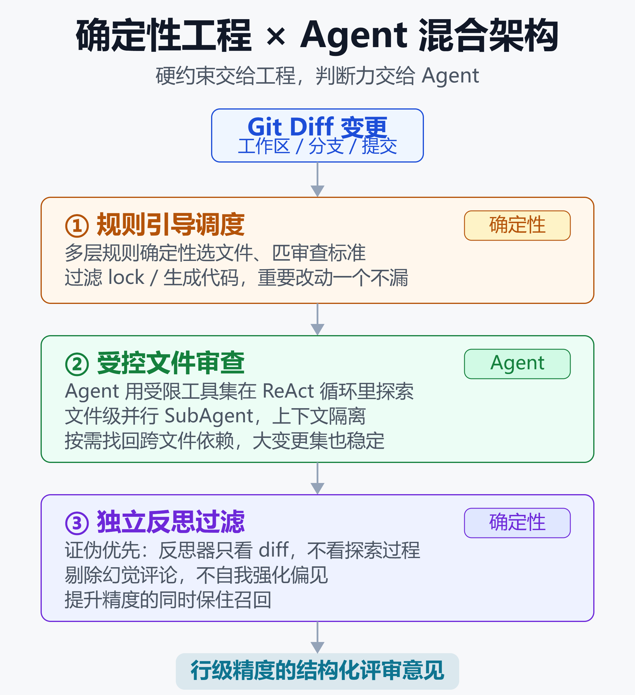

阿里开源 Open Code Review：两年内部实战、数百万缺陷验证的 AI 代码审查工具
一个数字先摆在前面：在一份由 200 个真实 Pull Request、1505 条专家标注问题组成的基准里，Open Code Review 的语义 F1 最高是 Claude Code 的 2.17 倍，而 token 消耗只有它的 5 到 15 分之一。
这不是一个刚出生的开源玩具。它是阿里巴巴集团内部跑了两年的官方 AI 代码审查助手，服务过数万名开发者，识别了数百万个代码缺陷，2026 年 5 月才正式对外开源。
它想证明的观点也很直接：纯 Agent 方案做不好代码审查，把「确定性工程」和 Agent 拼起来才行。
它到底是什么
Open Code Review 是一个命令行工具，命令名 ocr，用 Go 写核心引擎、TypeScript 做外围，兼容 OpenAI 和 Anthropic 两套 API，配一个模型端点就能跑。
它的核心流程是：读取 Git diff，把变更文件通过一个带工具调用能力的 Agent 发给大模型，生成行级精度的结构化审查意见。
和「把 diff 丢进聊天框让模型看一眼」不同，这个 Agent 能读完整文件、搜代码库、看其他变更文件找上下文，产出的是深度审查而不是表面反馈。除了审 diff，ocr scan 还能扫整份文件，用来审计陌生代码库或者没有有意义 diff 的目录。
它的关键信息如下。
| 项目 | 情况 |
|---|---|
| 开源时间 | 2026-05-18 |
| 协议 | Apache 2.0 |
| 主要语言 | Go + TS |
| 兼容 API | OpenAI / Anthropic |
为什么通用 Agent 做不好审查
如果你深度用过 Claude Code 之类的通用 Agent 加 Skill 做代码审查，大概率踩过这三个坑。
第一是覆盖不全。变更集一大，Agent 就开始「偷懒」，选择性只审几个文件，剩下的直接跳过，而你根本不知道它跳过了什么。
第二是位置漂移。Agent 说第 42 行有问题，你点过去一看那是个空行，实际问题在第 38 行。这种行号偏移在长文件里尤其严重。
第三是质量不稳定。今天写的提示词效果不错，改两个字质量断崖式下跌。纯自然语言驱动的流程几乎没法系统化调试。
阿里团队在配套论文里把根因总结为两点：非确定性——不受约束的工具调用让审查结果不稳定；上下文局部性——评审者的视野被困在 diff 里，能发现的问题深度就被封顶了。
核心设计：三处注入确定性
Open Code Review 的思路不是给 Agent 最大自由度，而是在流水线的三个关键节点注入确定性，让「不能出错」的部分由工程逻辑保证，把判断力留给 Agent。

如上图，整个流程走三步：规则引导调度（确定性）→ 受控文件审查（Agent）→ 独立反思过滤（确定性），最后产出行级评审意见。下面逐层拆开。
第一层：规则引导调度
哪些文件该审、哪些该过滤（比如 lock 文件、生成代码），由工程逻辑决定，不靠模型判断，确保重要改动一个不漏。
它还会做智能文件打包：把关联文件归并成一个审查单元，比如 message_en.properties 和 message_zh.properties 会打包在一起审。每个包作为独立 sub-agent 运行，上下文隔离，天然支持并发，在超大变更集上尤其稳定。
规则匹配是模板引擎驱动的，比纯语言引导更稳定、更可预期：Java 文件看 NPE 和线程安全，XML mapper 文件看 SQL 注入，前端文件看 XSS。
第二层：受控文件审查
到了真正需要判断的环节，才把舞台交给 Agent。但它拿到的不是一套通用工具箱，而是从阿里内部海量线上数据的工具调用轨迹里提炼出的专用工具集——包括调用频率分布、单一工具重复调用率等分析结论。
论文里把这一层叫「Grounded File Review」：用受控工具集通过 ReAct 循环取代自由探索，文件级并行 SubAgent 在上下文连贯性和效率之间做平衡，并按需找回跨文件依赖。
第三层：独立反思过滤
这是消除幻觉评论的关键。反思模块采用「证伪优先」，而且信息边界是刻意不对称的：反思器只看 diff，看不到 Agent 探索过程中的工具增强上下文。
这样做的好处是去掉幻觉评论时不会自我强化偏见，从而在提升精度的同时保住召回。独立的评论定位模块则专门解决行号对不上的问题。
一个关键取舍：宁可漏，不要吵
有一点必须讲清楚：Open Code Review 的召回率是低于通用 Agent 的。
这是团队有意的选择——牺牲召回换精度，减少噪声。README 里说得很直白：更高的精度意味着更少的误报需要人工去分诊。对于每天要处理大量 PR 的团队，「报出来的基本都是真问题」往往比「什么都报一点」更有价值。
所以它适不适合你，取决于你更怕漏问题还是更怕被噪声淹没。
上手有多简单
三步就能跑起来。
第一步，安装：
npm install -g @alibaba-group/open-code-review
第二步，配置模型。交互式界面会引导你选 provider、填 API key、选模型，然后自动测连通性：
ocr config provider
ocr config model
它还兼容 Claude Code 的环境变量，会自动从 ~/.zshrc 或 ~/.bashrc 读取。已经在用 Claude Code 的话基本零配置。
第三步，审查。几种模式覆盖常见场景：
ocr review
ocr review --from main --to feat
ocr review --commit abc123
ocr scan --path internal/agent
ocr delegate preview 是委托模式，让你的编程 Agent 用自己的模型来审，OCR 只负责文件选择和规则解析，这种模式不需要配 OCR 的 API key。
规则系统与集成
规则采用四层优先级链，层内 first-match-wins。
| 优先级 | 来源 |
|---|---|
| 1 最高 | CLI --rule 参数 |
| 2 | 项目 rule.json |
| 3 | 全局 rule.json |
| 4 最低 | 内置规则 |
内置规则覆盖 Java、Go、TypeScript 等主流语言的高频问题：空指针、线程安全、XSS、SQL 注入、资源泄漏。你也能写自定义规则，path 支持 ** 递归和 {java,kt} 花括号展开。
集成路径也很全：可以装成 Skill，可以做 Claude Code / Codex / Cursor / Kimi Code / OpenCode 插件，--format json 输出机器可读结果接进 GitHub Actions、GitLab CI、Gerrit。还带一个 Session Viewer，能在浏览器里回放审查会话、把评论标为已修复或忽略。
放到竞品里看，它站在哪
AI 代码审查这个赛道 2026 年已经很热闹。要看清 Open Code Review 的位置，得先把玩家分成三类。
国外：以 SaaS PR 机器人为主
国外主流工具大多是挂在 GitHub / GitLab 上、自动评论 PR 的托管服务，按人头订阅。
CodeRabbit 是覆盖面最广的默认选择，支持 GitHub、GitLab、Bitbucket、Azure DevOps，$24-30 每人每月，有免费档。它跑量很大，截至 2026 年 6 月官方称已覆盖 600 万仓库、标记 7500 万缺陷。代价是评论偏多，第三方测评里平均一个 PR 约 10 条评论，噪声不低。
Greptile 主打 agentic 搜索、支持自托管，$30 每人每月含 50 次审查，超出按 $1 每次、按作者计费。它营销宣称 82% 召回，但第三方在同一批仓库上实测检出率明显更低。
Cursor BugBot 走另一个极端：极度克制，平均不到 1 条评论每 PR，几乎都是运行时相关问题，适合已经在用 Cursor 的团队，但价格最贵。Qodo 强在自动生成测试，Graphite Diamond 则以低误报著称、常作为补充工具。
下面把关键差异压成一张表（数据来自各自官方与第三方测评，方法不同不可绝对横比）。
| 工具 | 形态 | 计费 |
|---|---|---|
| OCR | 开源 CLI | 免费 |
| CodeRabbit | SaaS 机器人 | 按人头 |
| Greptile | SaaS/自托管 | 按人头 |
| Cursor BugBot | IDE 内嵌 | 按人头 |
国内：多是 IDE 内嵌的一项功能
国内大厂的思路和 OCR 很不一样——代码审查往往不是独立产品，而是嵌在编程助手 IDE 里的一个能力。
阿里云的通义灵码是智能编码助手，主打代码续写、优化、问题修复和编程智能体，个人可免费用。腾讯的 CodeBuddy / WorkBuddy 在 Chat 模式里用 /cr 指令触发本地自评审（AICR），兼容 Claude 和混元模型。字节的 Trae / MarsCode 则是 IDE 插件，支持 100 多种语言，重心在补全和生成。
也就是说，国内目前少有像 OCR 这样把代码审查单独拎出来、做成开源命令行工具的产品。同样出自阿里，通义灵码是面向个人开发者的 IDE 助手，OCR 则是面向团队和 CI 流程的专用审查引擎，两者定位并不重叠。
OCR 的独特位置
把这些放在一起看，OCR 的差异化就清楚了。
它不是 SaaS 订阅，也不是 IDE 内嵌功能，而是一个开源、免费、可进 CI 的独立 CLI。它不追求最高召回或最多平台，而是用混合架构把精度和 token 成本做到极致。它甚至可以退到委托模式，只做确定性的文件选择和规则解析，让 CodeRabbit 之外你自己的编程 Agent 来出审查意见。
一句话概括：国外拼平台和易用性，国内拼 IDE 一体化，OCR 拼的是「同一个模型下更准、更省」的工程架构，外加开源可自控。
谁该试试，谁可以先不碰
适合的场景很清楚：团队在用 AI 编程工具、想让代码审查更靠谱；对现有 Agent 加 Skill 方案的覆盖度和准确度不满意；想在 CI/CD 里自动跑 AI 审查；或者 Java 项目多、NPE 和线程安全是高频痛点（内置规则覆盖最好）。
可以先不碰的场景也同样清楚：一个人的小项目、变更量小，让 Claude Code 看一眼就够了；代码语言太冷门，内置规则覆盖不到；或者你根本不想依赖外部大模型 API。
小结
Open Code Review 最大的价值不在于「又一个 AI 代码审查工具」，而在于它用两年内部实战数据支撑了一个明确的工程主张：审查这件事，把该确定的地方交给工程、把该判断的地方交给 Agent，比让 Agent 一把梭更靠谱。
三处注入确定性——规则引导调度、受控文件审查、独立反思——共同把「同一个模型」的表现拉到了通用 Agent 之上，同时把 token 成本压到几分之一。对正在为 AI 编程 token 账单发愁的团队，这个思路本身就值得借鉴。
免责声明
本文基于公开资料整理，性能数据来自项目官方 README 与配套论文（AACR-Bench 基准），不同模型、不同代码库下的实际效果可能有差异。文中涉及的工具选型建议仅供参考，请结合自身项目情况评估，不构成任何采购或投资建议。
参考来源
- GitHub —— alibaba/open-code-review 项目主页与 README
- arXiv —— OpenCodeReview: Determinism over Non-Determinism for Cost-Effective Agent-Based Code Review
- InfoQ —— Alibaba Open Sources OpenCodeReview for AI-Assisted Code Review
- 博客园 iTech —— 用通用 Agent 做代码审查？阿里开源的 ocr 命令告诉你差在哪
- Macroscope —— Best Greptile Alternatives for AI Code Review 2026（含 118-bug 基准与定价）
- SSOJet —— 8 AI Code Review Agents That Critique Diffs Before Commit
- 腾讯云文档 —— WorkBuddy Enterprise 代码评审（AICR / cr 指令）
延伸阅读
推荐搭配装备
善其事，利其器。以下硬件能最大化你的AI体验👇
🔗 通过以上链接购买可支持本站持续运营 🙏